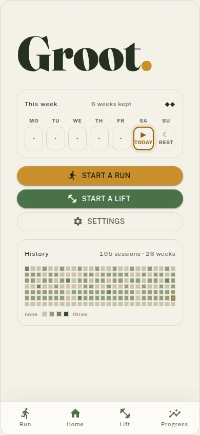
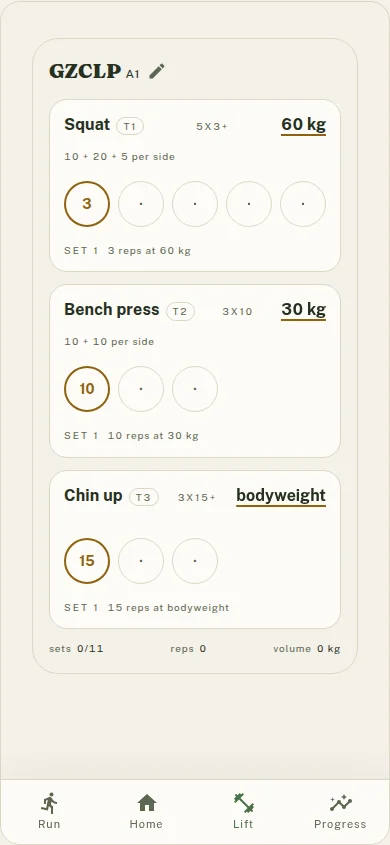
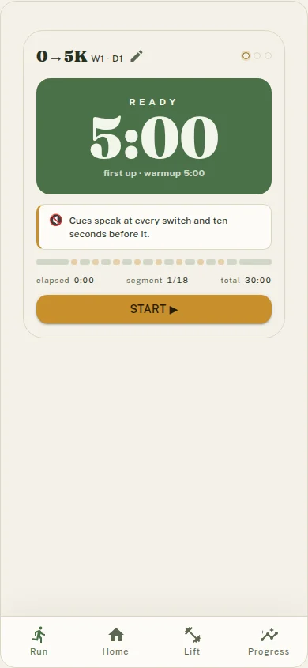
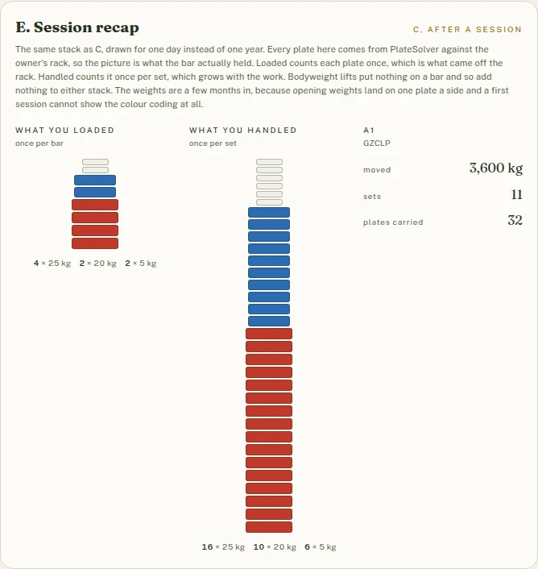

01
Lift on a ladder
GZCLP progression keeps the exercise and tier together. Squat can move through its heavy T1 and lighter T2 work on separate ladders.
A training log in active development
Groot brings barbell progression, interval running, weekly habit contracts, and history into one record of the work.
The page shows real Groot screens. It is a product study, not a claim that the app is finished.

01 / The record
Each part answers a different question about the week, then leaves a useful trace for the next session.
01
GZCLP progression keeps the exercise and tier together. Squat can move through its heavy T1 and lighter T2 work on separate ladders.
02
The 0→5K coach gives you a session with timed switches and spoken cues, including the ten-second warning before each change.
03
A weekly habit contract makes the week legible. The home screen shows what counts, what is due today, and how many weeks you have kept.
04
History keeps the sessions you logged close enough to inspect, from the shape of a week to the plates loaded in a single recap.
02 / The screens
Groot stays close to the next action. Tap through a set, follow the interval, or check the contract before the week gets away from you.

Squat, bench press, and chin-up stay visible as distinct work. The screen keeps the current set and the next one in reach.

A five-minute warmup leads into the first interval. The progress strip and spoken cues tell you when the session changes gear.
The week card puts today beside the contract and the longer history, so a single session has a place in the wider record.
03 / The recap
The session recap treats the bar as data. It separates what was loaded from what was handled, then keeps the totals beside the plate picture.

Active development
Groot’s progression engines, interval schedules, week contract, screens, and device store are being built together. Some screens still open on defaults instead of reading everything you have logged.